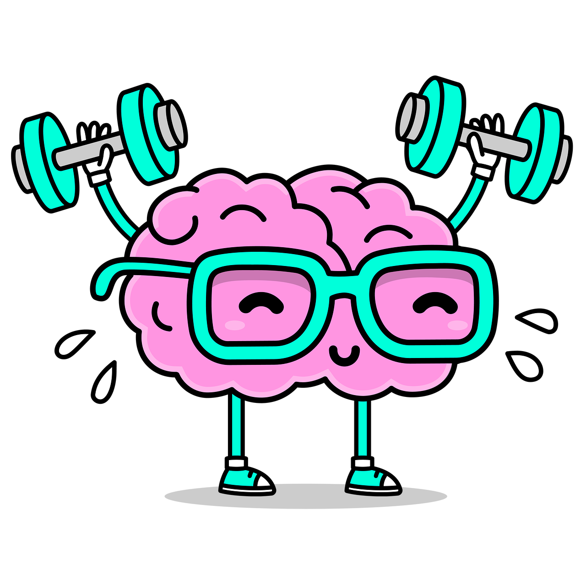

Maybe it's your mental health.
If you’ve been feeling unusually tired, easily frustrated, or lacking the drive to complete everyday tasks, it may be more than just a rough patch. Paying attention to your mental health is not a sign of weakness, it is a responsible and necessary part of taking care of yourself. Good health is about more than just your physical body. Mental health is an essential part of living a balanced and fulfilling life.
Being healthy means keeping up with your mental health.
It affects how we think, feel, and interact with the world around us. Supporting your mental health involves making time for rest, practicing healthy habits, and seeking support when needed. Whether that means talking to a trusted friend, taking a break, or reaching out to a professional, small actions can make a big difference.
![An infographic with the text, You are not Alone with Alone in capital letters, with a small paragraph that reads, 'Millions of people are affected by mental illness each year. Across the country, many people like you, work, perform, create, compete, laugh, love and inspire each day.' Additional elements in the infographic include some statistics that read, '1 in 5 U.S. adults experience mental illness.', '1 in 20 U.S. adults experience serious mental illness', '17% of youth (6-17 years) experience a mental health disorder'.](assets/infographic.jpg)
Infographic credit to: www.nami.org
Press the button below to explore ways to support your mental health.
Find them here!
Images are from: pixabay.com